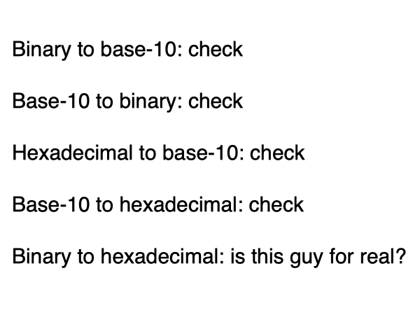
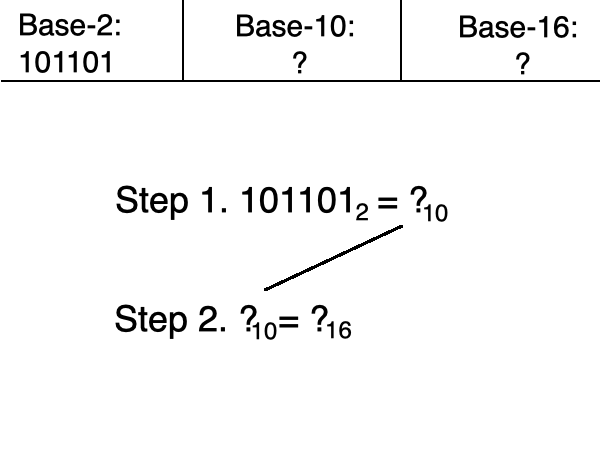
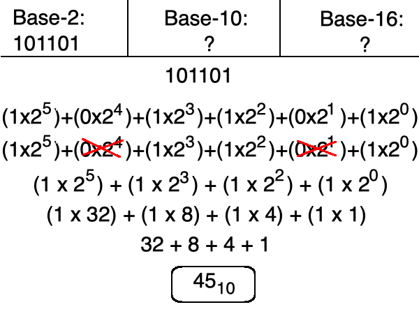
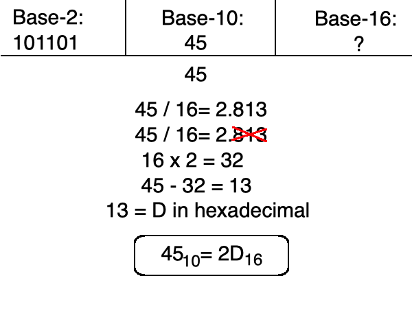
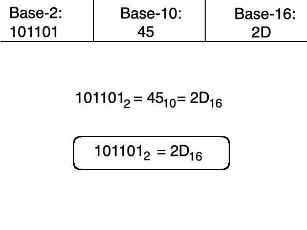

you smart good
Programming Concepts
Two-step conversions
So far, we've learned how to convert:
1. binary to base-10
2. base-10 to binary
3. hexadecimal to base-10
4. base-10 to hexadecimal
But what happens if we need to convert binary to hexadecimal, or hexadecimal to binary?
Welcome to two-step conversions!

If we have 1011012, what is this value in hexadecimal?
Well since it is a base-2 number, first we need to know what it is in binary, and since we are much more familiar with base-10, we are going to convert this:
Step 1. from binary to base-10, then:
Step 2. from base-10 to hexadecimal.
See that? Two steps!

Step 1. convert from binary to base-10.
There is a 1 in the ones, fours, eights, and thirty-twos column. The other columns have a 0, so we can ignore those.
If we add 1+4+8+32, we get 45.
This means that
1011012 = 4510

Step 2. convert from base-10 to hexadecimal.
We follow the steps that we learned from previous problems to convert to base-16.
When we follow these steps, we see that
4510 = 2D16

We now know that 101101 in binary equals 45 in base-10.
We also know that 45 in base-10 equals 2D in hexadecimal.
Therefore, 101101 in binary equals 2D in hexadecimal.
And with that, this equation is done!
